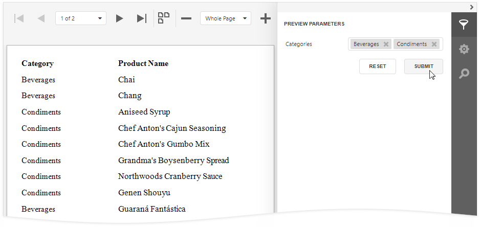
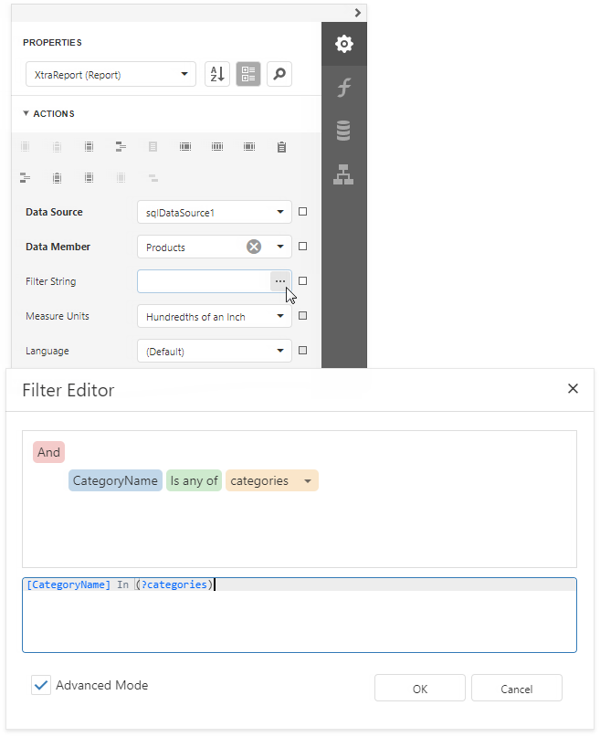
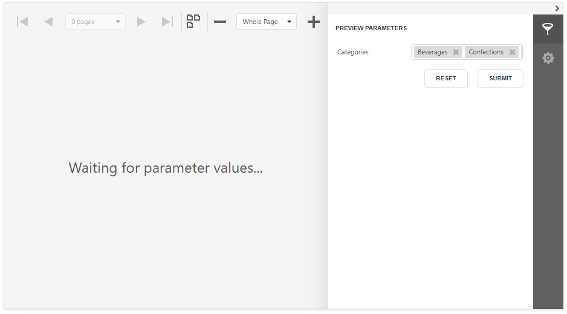
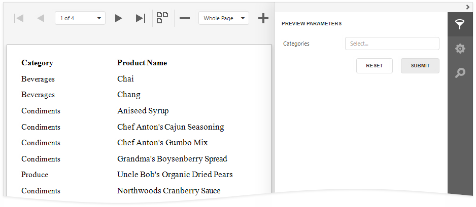

Multi-Value Report Parameters
This document describes how to create a multi-value parameter and filter report data by the specified parameter values.

Create a Multi-Value Parameter
Create a report parameter and enable the Multi-Value option.

Specify a list of predefined values for the parameter. See the following topics for more information:
- Report Parameters with Predefined Static Values - to directly specify the list of values.
- Report Parameters with Predefined Dynamic Values - to specify the storage that contains the list of values.
Filter a Report by a Multi-Value Parameter
Use the Is any of operator in the report’s filter string:

Pre-Select Parameter Values
Use one of the following methods to pre-select multiple parameter values when a report is first rendered.

Assign an array of values to the parameter.

Set the Expression property to an expression that evaluates to an array of values. You can use data source fields and other parameters in expressions.

Enable the Select All Values property to populate the parameter value with all items from its data source (static or dynamic).

Tip
Disable the report's Request Parameters property to avoid the Waiting for parameter values message in Preview and display the report with pre-selected parameter values.
Optional Multi-Value Parameter
You can leave the parameter unspecified and display all report data, or choose parameter values to filter the report.

Do the following to make a multi-value parameter optional.
Configure the parameter:

Property Value Allow Null Checked Value Not specified Expression Not specified Select All Values Unchecked Disable the report's Request Parameters property.

Use the following report filter string:
?category Is Null or [CategoryID] In (?category)

Tip
You can also use the filter string shown above to filter report data at the data source level.